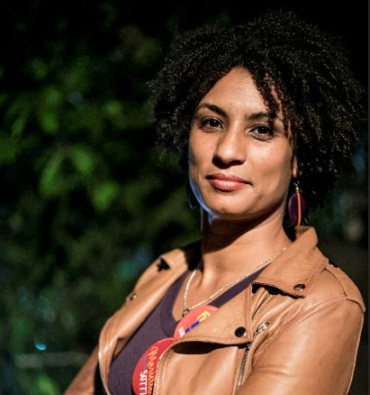

Rosa da Resistência

Marielle Francisco da Silva, conhecida como Marielle Franco, foi uma socióloga, feminista, defensora dos direitos humanos e política brasileira.
Marielle Francisco da Silva, conhecida como Marielle Franco, foi uma socióloga, feminista, defensora dos direitos humanos e política brasileira.
"As rosas da resistência nascem no asfalto. Recebemos rosas, mas vamos estar com o punho cerrado falando de nossa existência contra os mandos e desmandos que afetam nossas vidas."
Filiada ao PSOL, Marielle Franco elegeu-se vereadora do Rio de Janeiro para a Legislatura 2017-2020, durante a eleição municipal de 2016, com a quinta maior votação. Crítica da intervenção federal no Rio de Janeiro e da Polícia Militar, denunciava constantemente abusos de autoridade por parte de policiais contra moradores de comunidades carentes. Em 14 de março de 2018, foi assassinada a tiros junto a Anderson Pedro Mathias Gomes na região central do Rio de Janeiro.